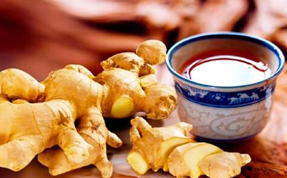

小小
1、感冒 俗语说：“感冒时，将
2、咳嗽 ①先将二个大梅用火烤到表皮焦时为止，接着取跟梅同样数量的生姜用火烤，烤过后磨碎成姜汁，然后将姜汁和梅用纱布挤出汁液注入碗内，再加入粗茶趁热服用可以治疗重咳嗽。【梅即酸梅（非梅干），食品店有售】
3、咳嗽 ②取跟大姆指大小的老姜磨成碎姜，加人
4、百日咳 将莲藕磨碎后用纱布挤出汁液注入碗内，同时加入少许的砂糖和盐，最后渗入莲藕量十分之一的姜汁，搅拌后冲开水趁热服下可治百日咳。同时，用老姜磨成姜液后，用纱布沾来擦拭喉咙将更具效果。
5、发热及虚汗发热时取
6、咽喉炎 咽喉炎时取蛋黄一个，姜汁二、三滴，少许的砂糖，再泡入热汤搅拌均匀后趁热喝下可以消除咽喉肿。
7、肺炎 把毛巾放在脸盆内和生姜、醋一齐煮，待醋烧开后取毛巾揉胸部及背部，必要时用纱布将毛巾捆在胸部敷着，但不能绑得太紧。（注意：姜和醋的比例为一比六）。
8、支气管炎 取二、三个老姜磨碎，再用纱布挤汁，然后用纱布沾姜汁擦拭喉咙，必要时用不透水的塑胶布将沾有姜汁的纱布固定在喉部效用更佳。
9、关节炎 把磨好的姜汁用火烧开，趁热用纱布沾汁敷在患部，只要经常这样做可以减轻关节炎的
10、神经痛 取热姜汁来敷问患部，然后用麻油涂患部，再者贴上一块（由姜、面粉、
11、颜面神经痛 先用姜汁敷在患部再贴上（由姜、面粉、马铃薯三种原料）做成的姜膏，毛发部份贴不上药膏时可用姜油揉拭之。
12、风湿症 用姜汁敷上患部后，贴上（由姜、面粉、马铃薯）制成的姜膏，然后用姜油擦拭患部效果更佳。
13、痛风病风时，取煎熬萝卜叶的汁和姜汁混合，然后用来擦拭患部如此可以减轻痛苦。
14、脊椎骨疡 取二两的老姜和500cc的水煮成姜汤，用毛巾沾汤敷患部，每日二回，一回三十分钟，只要经常敷，将可得到意想不到的效果。
15、胆石症 取大咸梅一个加上少量的姜汁冲热茶服用，轻者每日二至三回，重者再取五两的老姜和2公升的水熬成汤，用来擦拭患部后贴上由（由姜、面粉、马铃薯制成的）姜膏更具效果。
16、肝病肝脏发肿时用姜汤敷上患部再贴上如前项的药膏可消除发肿。假使经常疼痛可见用鬼芋煮成的汤闷患部效果不错。
17、胃下垂及胃弛缓 胃弛缓即胃壁肌肉松弛、消化系统不良、食欲不振，经常会有打呃（嗝）、呕心症状、假使得了此症可取二两的姜，加三钱的
18、胃扩张将老姜切片炒焦后置于碗内冲热开水饮用，一日三回经久饮用效果很好。
19、慢性胃炎将老姜片炒焦后置于碗内冲热开水，俟冷却后饮用，再者，炒过的姜和水加糖煎熬饮用，经过三周后效果即可显示出。
20、慢性肠炎将老姜片置于袋内煎熬成汤，然后用姜汤坐浴（只限下半身），每次十分钟，如此可以暖和全身，促进血液循环的畅通，不但可治慢性肠炎对于肚子常出毛病的人也是一大福音，再者，以萝葡的干叶煎熬而成的汁液加上姜汁来坐浴效果更佳。
21、腹痛及胃痛 取二个威梅置于碗内加上1/3量的姜汁，20cc酱油，少许的砂糖，然后冲开水趁热饮用可以止痛。胃痛时用毛巾沾姜汁擦拭患部也可减轻痛苦。
22、食物中毒食物中毒时应采取的紧急措施如下，假使是吃兽肉、鱼类、及菌类中毒者应饮用姜汁。若吃竹苟中毒时取五钱的姜汁加上一两的麻油饮用。
23、泻肚 将生姜烤焦后磨成粉末，取五钱姜粉和粥汤混合饮用，对于急性泻肚的治疗效果很好，假使情况相当严重，取姜、咸梅、黄莲、
24、慢性泻肚用白米和
25、头痛及齿头痛时，取同量的姜汁和麻油另加一点蜂蜜混合成药物，擦拭头部可以治疗头痛。同样地，将磨碎的姜汁和面粉混合成粘状物，牙痛时取粘状物贴在牙痛部分的颊面可以镇痛。
26、蓄脓症及鼻子不通气患蓄脓症时，用姜、面粉及马铃薯等制成的所谓姜膏贴鼻根、鼻侧、眉间、前额都可以产生良好效果。若鼻子不通气时可用粗茶（茶叶煮滚）加入少许盐分洗鼻孔，然后用棉花沾姜汁插入鼻孔擦拭，一日三回即可。
27、夜尿症患夜尿症时用萝卜的干叶煎熬的汁液和姜汁泡入温水坐浴，久而久之自然会有见效。点击图片注册
28、食欲不振 把萝卜磨碎后加上少许的姜汁搅拌后用来佐餐，对于增进食欲和帮助消化具有功效，假使胃部感到堵塞食欲不振时可吃下几片姜，或者喝一些煎熬的姜汁均可。
29、腺病质患者青白色腺病质的儿童只要用热姜汤擦拭身体即可改善肤色，此法大人也可以使用。
30、麻诊取一汤匙量的萝卜汁、姜汁一、二滴，少许的盐和砂糖加五倍的温开水搅拌服用。上述数量是一日份可分三次服用，可以帮助发疹。上述药方是一岁乳儿的份量，若是五岁份量可以加倍，十岁者可加至四倍，视年龄斟酌之。
31、孕吐 取
32、痔核 取一两老姜磨碎后放人温水坐浴，如此可以使患部感到温暖，并且帮助血液循环，不用说此法可以用以治疗痔核。只要每日坐浴一回，久而久之自然可以奏效。假如再加上萝卜煎熬的汁液效果更佳。再者坐浴过后，在肛门贴上姜膏更能及早痊愈。
33、冻伤 将生姜切片装入布袋后置于浴池内洗澡可以疗伤。再者，将切片的姜煮成汤用来敷上患部亦可见效。
34、湿疹取萝卜的干叶煎熬的汁混合姜汁用以擦拭患部，大约经过一、二周后可以完全治愈。
35、头皮取姜汁一小杯和山茶油一起煮开后冷却，再加入200cc的麻油即可用来擦头皮，只要三日一回不出二周可以见效，若长久使用自然可与头皮绝缘。
36、肿疱 脓疮时，取磨碎的马铃薯和少许姜汁混合成泥状贴在患部即可消肿，但三岁以下的婴儿皮肤较敏感不可使用此药。
37、割伤及咬伤 割伤时，姜汁和麻油制成的姜油或姜膏来敷患部即可，万一被狗、老鼠及毒虫咬伤，同样地用姜油和姜膏来敷患部亦可。但是被疯狗咬伤必须再送医院急救不可迟疑。
38、晕车容易晕车的人只要在乘车、船之前三十分钟饮用热姜汁，一定可以得到意想不到的效果，再者，连着打嗝不停时猛喝一口姜汁，马上就可以阻止打嗝。
39、中暑中暑时先用薄姜汁灌入患者口中，俟恢复
40、肌肉僵硬 肌肉僵硬时取磨碎的老姜加上同量的
41、呕心取刨过皮的姜置于日光下晒干后下锅煎焦。呕心时取煎焦的姜三钱和同量的
42、姜膏的做法首先将马铃薯刨皮磨碎加上同样的面粉和十分之一量的姜汁混合而成泥状物，然后将泥状物铺在布条上（大小是6至10厘米）即称之为姜膏。
编后语：一般而言，老姜比嫩姜药效果来得佳，纵然说，姜的用途有多种，但患者有痔疮者假如食用太多，对于病情不但无法改善反易恶化，因此食用者不得不注意节制，再者，有皮肤病的人也要注意，特别患有急性炎症者更不能多食，以上所列有关姜的医学用途，希望你能适时采用，使